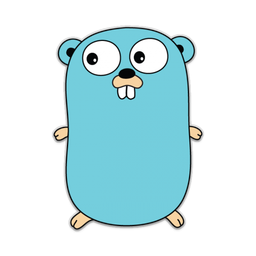

Calvin Feng

You can think of this as my index page to browse all my works.
Index
Projects
Machine Learning Notebook
This is my central repository for collecting all my notes and references on machine learning.
My Playground: Guitar Journey
I used to play guitar when I was a teenager. I stopped because I was too lazy to practice. Well, many years later, I’ve grown to be a more disciplined man. I built a tool to keep track of my timeline to monitor my progress and improvement.
Popcorn the Movie Recommender
I was experimenting with matrix factorization and built a recommendation engine using MovieLens’ IMDB data. It has 25 million movie ratings from 160,000 users on 60,000 movies. I don’t host this service anymore because I didn’t want to pay for the AWS bills. However you can still see my source code. The algorithm can be found in my machine learning notebook.

MegaPx
This is the first ever full stack project I’d built, when I was still using Ruby on Rails. That sort of tells how “ancient” it is. It is supposed to allow users to upload high resolution images and browse by location. It’s basically a 500px clone. I built it for educational purpose. I actually felt that Rails put too many constraints on me. I’d rather build without heavy-weighted frameworks.

Studies
In my spare time, I like to write a GitBook on materials I learned from textbooks or online courses. However, for machine learning courses like CS229, CS232n, CS224n, they are captured in my machine learning notebook. I ran out of quota to make more free GitBooks.
Probablistic Robotics
This is my textbook notes on Sebastian Thrun’s Probablistic Robotics.
CS8803 Introduction to Operating System
This is my course note on Georgia Tech’s CS8803.
Go Academy
This is a tutorial I wrote for Golang. It is also a personal reference for Go patterns I learned.
Tools
Over the years I have worked with many different tools for different project needs. This is a high level overview of my “gear” list.
